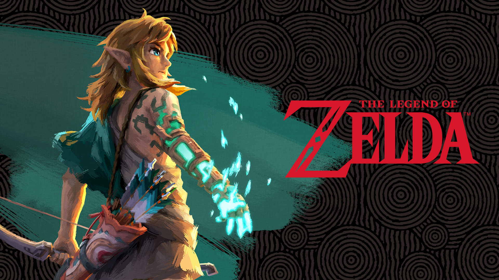

⚔️ The Legend of Zelda

Género: Acción-Aventura / ARPG
Desarrolladora: Nintendo
Creador: Shigeru Miyamoto (宮本 茂) y Takashi Tezuka
Lanzamiento del primer juego: 21 de febrero de 1986 (Famicom Disk System en Japón) / 1987 (EE.UU. en cartucho)
Plataformas: Todas las consolas de Nintendo, desde NES hasta Switch
Ventas totales de la serie: Más de 70 millones de unidades (hasta 2015)
📖 Sinopsis general
La serie The Legend of Zelda sigue las aventuras de Link, un joven héroe destinado a proteger el reino de Hyrule y rescatar a la princesa Zelda del antagonista principal, el malvado Ganon (también conocido como Ganondorf). El núcleo de la trama gira en torno a la Trifuerza, una reliquia sagrada compuesta por tres piezas que representan el Poder, la Sabiduría y el Valor.
🏆 Obras maestras y reconocimientos
La saga es considerada una de las más influyentes e importantes en la historia de los videojuegos. Estas son algunas de sus entregas más aclamadas:
- ★ The Legend of Zelda: Ocarina of Time (1998): Considerado por muchos como el mejor juego de la historia. Fue el primer juego en la historia en recibir una puntuación perfecta de 10/10 por parte de revistas como Famitsu, IGN y GameSpot. Introdujo el sistema de bloqueo (Lock-on) que revolucionó los juegos en 3D. Tiene una puntuación promedio de 99/100 en Metacritic.
- ★ The Legend of Zelda: Breath of the Wild (2017): Reinventó la fórmula del open-world. Ganó el premio al Juego del Año en los Game Awards 2017.
- ★ The Legend of Zelda: A Link to the Past (1991): Estableció muchos de los conceptos clave de la saga (mundo oscuro/claro, maestría de gameplay). Fue el primer juego en superar los 39 puntos en la estricta revista Famitsu y el primer millón de ventas en Japón.
- ★ The Legend of Zelda: Tears of the Kingdom (2023): La esperada secuela de Breath of the Wild que expandió el mundo hacia los cielos con mecánicas de creación y construcción.
- ★ The Legend of Zelda: The Wind Waker (2002): Famoso por su estilo gráfico "Cel shading" (dibujos animados) que ha envejecido de forma excepcional.
💡 Impacto y legado
La influencia de Zelda es inconmensurable. El sistema de bloqueo (Lock-on) creado para Ocarina of Time fue adoptado por prácticamente todos los juegos de acción y aventura en 3D que le siguieron, desde God of War hasta Dark Souls.
El diseño de sus mazmorras y la progresión basada en objetos (obtienes un objeto en una mazmorra que te permite acceder a nuevas áreas del mundo) sentaron las bases del género de acción y aventura moderno.
El productor de la saga, Eiji Aonuma, y su creador, Shigeru Miyamoto, son figuras legendarias en la industria por su enfoque en el diseño de rompecabezas y la exploración sin restricciones.
⭐ Puntuación de la serie: ⭐⭐⭐⭐⭐ (5/5 - Una de las sagas mejor valoradas de la historia)
← Volver a la lista de juegos